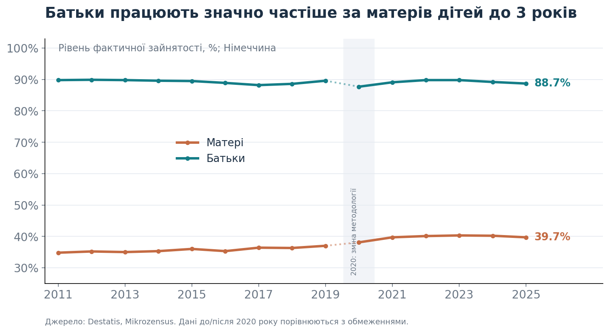
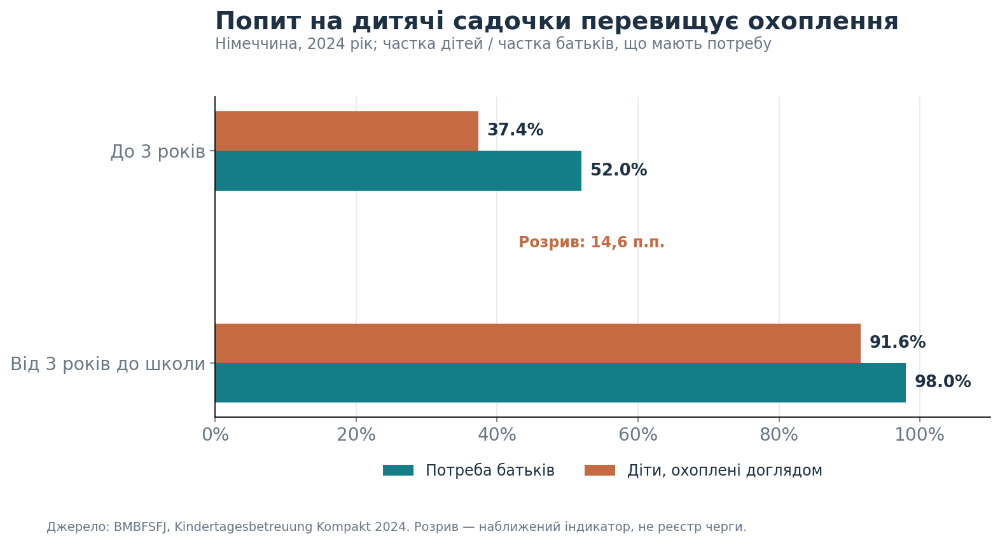
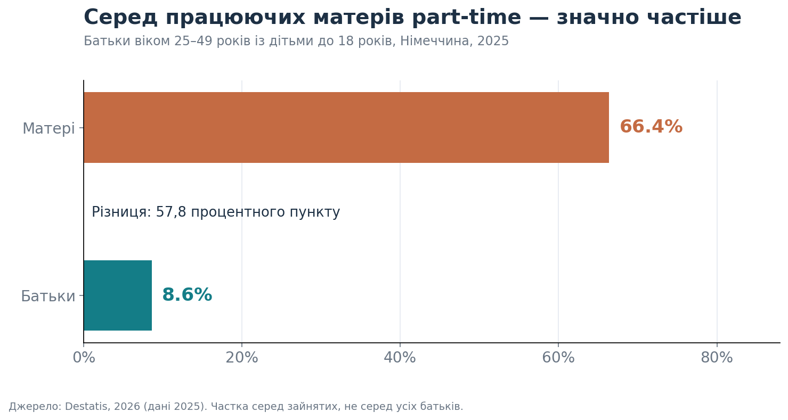

Повернення матерів до роботи в Німеччині: де виникають бар’єри?
Що показують державні дані про зайнятість батьків, доступність дитсадків і нерівний розподіл неоплачуваної праці.
Вступ: право на дитсадок ще не гарантує можливості працювати
Уявімо сім’ю, у якій дитині виповнилося три роки, а місце в дитячому садочку досі не знайдено. Один із батьків планує повернутися до роботи, але не може визначити навіть дату виходу. Це не лише побутова незручність: доступність догляду за дітьми впливає на можливість шукати роботу, погоджувати графік і відновлювати кар’єру.
У Німеччині дитина від трьох років до початку навчання у школі має законодавчо закріплене право на дошкільний догляд у закладі згідно з § 24 SGB VIII. Однак існування права не означає, що в кожній громаді доступна достатня кількість місць у потрібний час. До того ж сім’ї мають враховувати години роботи закладів і вартість догляду, яка залежить від регіональних та місцевих правил. Законодавство; федеральний огляд.
Мета цього дослідження — оцінити масштаби відмінностей у зайнятості матерів і батьків та перевірити, що офіційні дані говорять про можливі бар’єри повернення до роботи. У фокусі чотири теми: дитсадки, гнучкий графік, неоплачувана праця в родині та підтримка після кар’єрної паузи.
Що і як аналізувалося
Використано відкриті дані Федерального статистичного відомства Німеччини (Destatis), Федерального міністерства у справах сім’ї (BMBFSFJ) та інші офіційні державні джерела. Основні показники охоплюють 2011–2025 роки, але мають різні референтні роки й визначення: зайнятість — до 2025 року, охоплення доглядом і попит — 2024 рік, part-time — 2025 рік, розподіл часу — 2022 рік.
Тут досліджуються статистичні зв’язки й структурні відмінності, а не причинний ефект браку садочків. Агреговані показники не дозволяють визначити, скільки конкретно матерів не можуть працювати саме через відсутність місця або як довго триває їхня кар’єрна перерва.
1. Зайнятість: найбільша різниця — коли діти маленькі

Рисунок 1. Фактична зайнятість матерів і батьків віком 15–64 роки, які проживають із принаймні однією дитиною до трьох років. Джерело: Destatis, Mikrozensus.
За даними за 2025 рік, працювали 39,7% матерів і 88,7% батьків із дітьми до трьох років. Різниця становила 49 процентних пунктів. Серед батьків із принаймні однією дитиною до 18 років рівень зайнятості становив 71,2% для матерів та 91,4% для батьків. Destatis.
Довший часовий ряд показує, що зайнятість матерів маленьких дітей поступово зростала порівняно з початком 2010-х, але у 2025 році залишалася набагато нижчою за зайнятість батьків. Важливо: починаючи з 2020 року методологію Mikrozensus було змінено, тому порівняння з попередніми роками має обмеження. Також група «батьки з дітьми до 18 років» включає сім’ї з малюками: це не спостереження за одними й тими самими людьми в часі.
Висновок 1. Малий вік дітей пов’язаний із набагато нижчою участю матерів у зайнятості. Проте сам показник зайнятості ще не пояснює, що саме змушує або спонукає матерів відкладати вихід на роботу.
2. Дитсадки: між потребою і фактичним охопленням залишається розрив

Рисунок 2. Частка батьків, які повідомляють про потребу в догляді, та частка дітей, які користуються ним, за віковими групами. Дані за 2024 рік: BMBFSFJ, Kindertagesbetreuung Kompakt.
Для дітей до трьох років потребу в організованому догляді висловлювали приблизно 52,0% батьків (розраховано як 37,4% охоплення + 14,6 п.п. розриву), тоді як охоплення складало 37,4% дітей: розрив 14,6 п.п. Для дітей від трьох років до школи потребу повідомляли 98% батьків, а фактично послугами користувалися 91,6% дітей: різниця приблизно 6,4 п.п. Це показники для Німеччини загалом, а не для конкретної громади. BMBFSFJ.
У відповіді федерального уряду Бундестагу зазначено, що розрив за 2024 рік розрахунково відповідав близько 152 тисячам місць для дітей від трьох до шести років. Це оцінка, а не фактична кількість дітей у реєстрі очікування. Deutscher Bundestag.
За новішими даними за 2025 рік охоплення дітей до трьох років складало 37,8%, за заявленої потреби 49,3%: розрив 11,5 п.п. Отже, нестача не зникла навіть за зниження народжуваності. Міністерство також повідомило про проблему непланових закриттів дошкільних закладів, особливо в західній Німеччині. BMBFSFJ, 2026.
Висновок 2. Національна статистика підтверджує, що незадоволена потреба в дитячому догляді — не лише окремі історії сімей. Водночас розрив між бажаним і фактичним охопленням не можна ототожнювати з точною кількістю відмов у місці: обстеження, вікові групи, години догляду та місце проживання мають значення.
3. Навіть за наявності роботи матері частіше працюють part-time

Рисунок 3. Частка part-time серед зайнятих матерів і батьків віком 25–49 років із дітьми до 18 років, 2025 рік. Джерело: Destatis.
У 2025 році 66,4% працевлаштованих матерів із дітьми до 18 років працювали неповний день. Серед працевлаштованих батьків таких було лише 8,6%. Різниця — 57,8 процентного пункту. Це різні частки серед тих, хто має роботу, а не показники зайнятості всього населення.
Part-time може бути добровільним і корисним варіантом суміщення професійного та сімейного життя. Однак за потреби збільшити зайнятість невідповідність графіка садочка і роботи може обмежувати вибір. Сам факт роботи неповний день не доводить вимушеності такого рішення.
Висновок 3. Повернутися до будь-якої роботи — не те саме, що мати можливість працювати стільки годин, скільки людина хоче або потребує.
4. Що ще може впливати на повернення до роботи?
Розподіл догляду за дітьми та домашньої праці
Офіційне дослідження використання часу 2022 року показало, що матері в сім’ях із дітьми в середньому витрачали 39 годин 56 хвилин на тиждень на неоплачувану працю, тоді як батьки — 25 годин 22 хвилини. Різниця становить 14 годин 34 хвилини на тиждень. При цьому сумарний час оплачуваної та неоплачуваної праці в матерів і батьків був майже однаковим. Destatis, ZVE 2022, перегляд 2025.
Ці дані не вимірюють безпосередньо повернення після декрету, але показують суттєву нерівність у розподілі часу. Вона може обмежувати можливості професійного навчання, пошуку роботи та збільшення робочих годин.
Гнучкий графік і передбачуваність догляду
Гнучкий початок робочого дня, дистанційна робота там, де вона можлива, або поступове збільшення навантаження можуть полегшити повернення. Bundesagentur für Arbeit прямо називає part-time, Gleitzeit та Homeoffice серед моделей, які можна обговорити з роботодавцем. Але у використаному наборі даних немає оцінки того, скільки матерів позбавлені такої можливості. Тому це практична гіпотеза й напрям для подальшого дослідження, а не доведена причина статистичного розриву. BA.
Професійне повернення після тривалої перерви
Після сімейної паузи можуть змінитися вимоги до навичок, робочі інструменти й очікування роботодавців. Федеральна служба зайнятості пропонує консультування з Wiedereinstieg, зміни професії та підвищення кваліфікації. Однак наші агреговані дані не показують, які саме бар’єри — відсутність садочка, невідповідний графік чи навички — є найбільш поширеними серед кандидаток після перерви. BA.
Вартість садочка: важливе питання, але без узагальнення
Плата за дитячі садочки залежить від земель і муніципалітетів, а не встановлюється єдиним тарифом для всієї Німеччини. Тому інформацію про підвищення внесків у певній громаді не можна автоматично поширювати на всю країну. Щоб оцінити економічний вплив, потрібні окремі дані про місцеві тарифи, доходи сімей та необхідну кількість годин догляду. Федеральне міністерство економіки.
Рекомендації: кому і що можна запропонувати
Муніципалітетам і земельним органам, відповідальним за догляд: публікувати прості показники очікування місця, потреби за віком дітей, кількості вільних місць, доступних годин і непланових закриттів. Оцінювати не лише формальну наявність садочка, а й доступність потрібного графіка. Для сімей із дітьми від трьох років це особливо важливо на тлі законодавчого права на догляд.
Роботодавцям: запроваджувати реалістичні сценарії повернення після сімейної паузи: гнучкий старт робочого дня, перехід від part-time до більшої зайнятості за бажанням працівниці, returnship-програми та навчання з урахуванням потреб догляду. Оцінювати результат не лише за кількістю найнятих людей, а й за утриманням та добровільним збільшенням годин.
Bundesagentur für Arbeit та регіональним центрам зайнятості: поєднувати консультації з Wiedereinstieg із перевіркою реальної доступності догляду та графіка, а також із короткими програмами оновлення професійних навичок. Для оцінювання ефективності відстежувати працевлаштування через 3–6 місяців і задоволеність запропонованими робочими годинами.
Для подальшого дослідження: окремо перевірити зв’язок місцевих тарифів і доступності дитсадків із зайнятістю матерів, бажаною кількістю годин і тривалістю кар’єрної перерви. Для висновків про причини потрібні дані на рівні сімей/регіонів та належний статистичний дизайн.
Висновки
Офіційна статистика Німеччини підтверджує три важливі проблеми. По-перше, у 2025 році зайнятість матерів із дітьми до трьох років була на 49 п.п. нижчою, ніж батьків. По-друге, потреба в дошкільному догляді в 2024 році перевищувала фактичне охоплення навіть серед дітей від трьох років, які вже мають законодавчо закріплене право на місце. По-третє, у 2025 році матері, які працювали, набагато частіше за батьків обирали неповну зайнятість, а дані про використання часу свідчать про нерівний розподіл неоплачуваної праці.
Головний висновок: бар’єри повернення матерів до роботи варто розглядати як поєднання умов дитячого догляду, розподілу сімейного часу і можливостей на ринку праці. Це не доказ, що кожна з цих обставин спричиняє конкретний відсоток незайнятості; це аргумент на користь більш адресних даних і практичних рішень. Наявність вакансій сама по собі не гарантує, що мати маленької дитини зможе ними скористатися.
Джерела та методологічні примітки
- Destatis. Рівень зайнятості матерів і батьків із дітьми до трьох років, 2011–2025. Джерело даних графіка 1; перелом методології Mikrozensus у 2020 році.
- Destatis. Зайнятість матерів і батьків, 2025. Показники за віком дітей і визначення «фактичної зайнятості».
- BMBFSFJ. Kindertagesbetreuung Kompakt: охоплення і потреба, 2024. Джерело графіка 2; розбіжності у показниках округлені.
- BMBFSFJ. Kindertagesbetreuung Kompakt: дані за 2025. Оновлення щодо дефіциту місць та надійності послуг.
- Destatis. Часткова зайнятість матерів і батьків, 2025. Джерело графіка 3; лише працюючі батьки 25–49 років.
- Destatis. Time Use Survey (ZVE), 2022, переглянуті дані. Час на оплачувану та неоплачувану роботу, інша вибірка і рік, ніж у показниках зайнятості.
- Deutscher Bundestag. Оцінка нестачі місць у дитсадках, 2024. Розрахункова, не адміністративно зафіксована нестача.
- Німецьке законодавство. § 24 SGB VIII: право на дошкільний догляд.
- Bundesagentur für Arbeit. Повернення до професійної діяльності після перерви. Практичні заходи підтримки.
- Федеральне міністерство економіки. Економічне значення доступу до догляду за дітьми. Роль земель і муніципалітетів у фінансуванні й оплаті догляду.
Дата підготовки: 6 листопада 2026 року. Цей матеріал є описовим навчальним аналізом агрегованої офіційної статистики. Різні вибірки, роки й визначення показників не можна інтерпретувати як індивідуальні траєкторії матерів після декрету. Статистична асоціація не доводить причинно-наслідковий зв’язок.